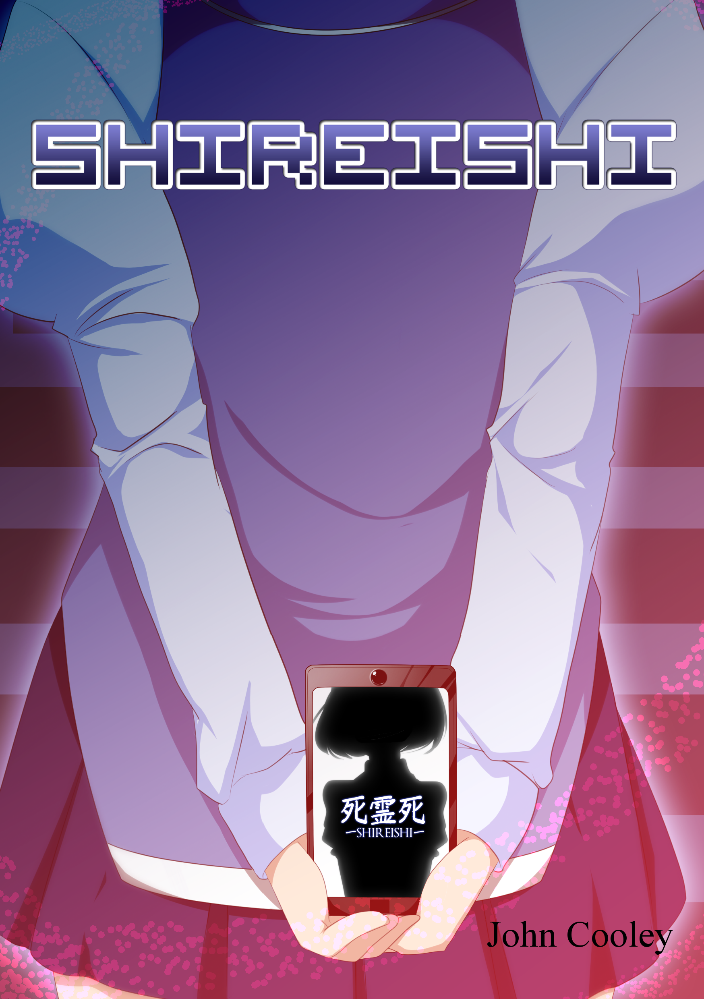
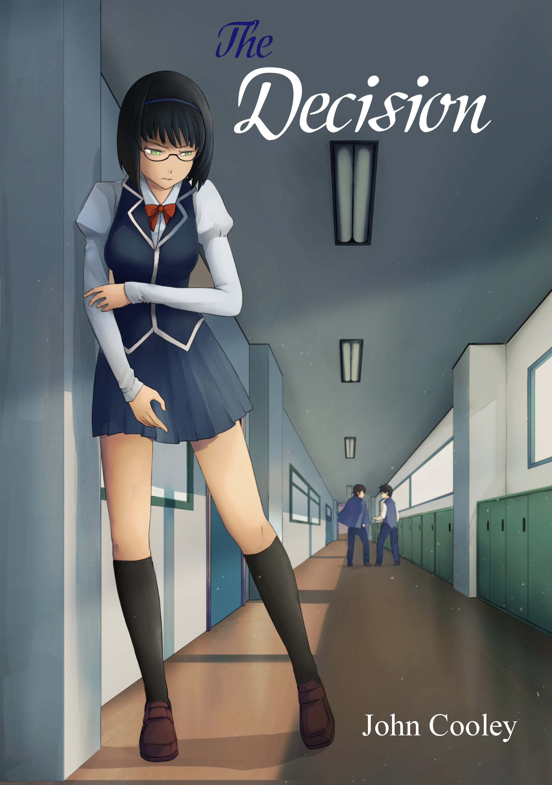
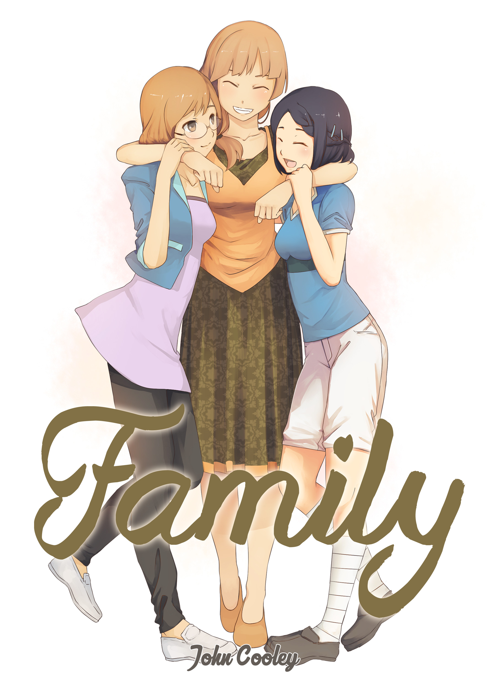
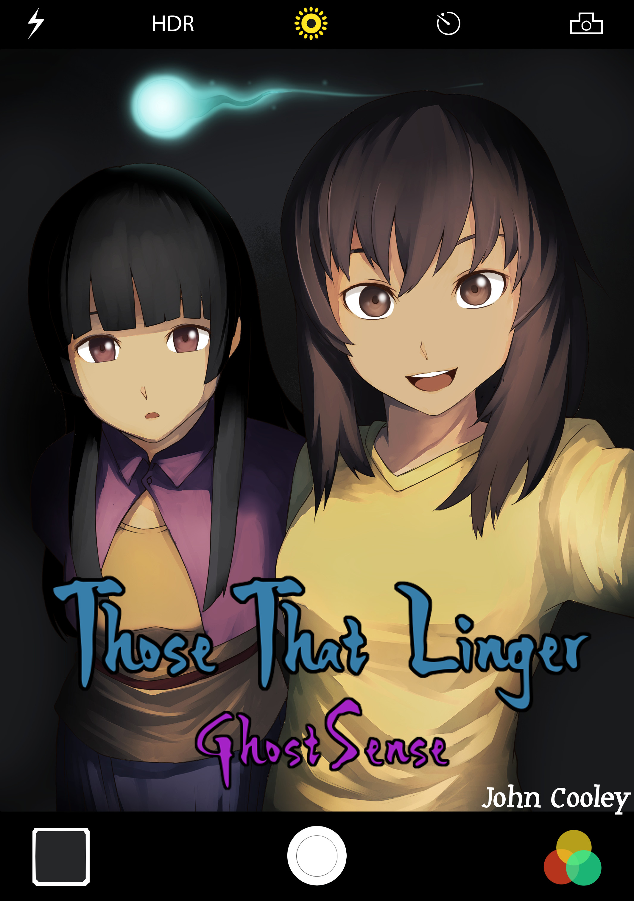
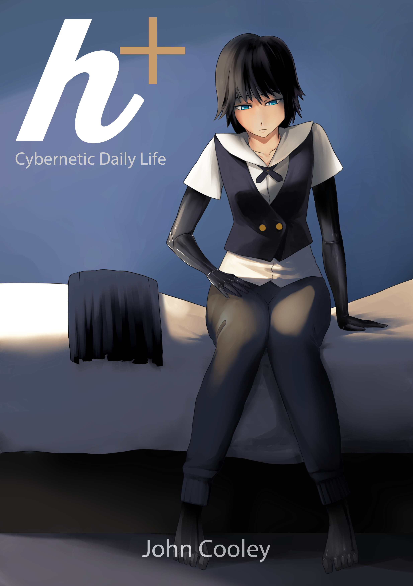

Nightshade
These stories take place in the Nightshade universe, a setting based on our world but with supernatural elements hidden from plain sight.
Shireishi

The Decision

Family

Those That Linger: GhostSense

h+ Cybernetic Daily Life
